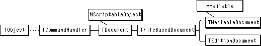

Legacy Document
Important: The information in this document is obsolete and should not be used for new development.
Important: The information in this document is obsolete and should not be used for new development.


Overview
Most Macintosh applications use the document as a repository for data, both in memory and on disk. When a user double-clicks a document's icon or chooses Open from the File menu, the application opens the document, reads its data into memory, and opens a window to display the data. When the user closes the document, the application saves the data to disk if it has changed.Documents are closely associated with windows. Opening a document usually opens one or more windows to display the document's data. Closing a window may close its associated document--closing a document always closes any associated windows.
Figure 7-1 shows the class hierarchy for MacApp's document classes. MacApp's basic document class is the abstract class
TDocument. TheTFileBasedDocumentclass is a subclass ofTDocumentthat adds support for reading and writing disk files. You define a subclass ofTFileBasedDocument, or of one of MacApp's other document classes, to provide a framework for reading, writing, and displaying your application's data. Your application can have more than one type of document, can allow more than one document to be open at a time, and can allow documents of different types to be open at the same time.Figure 7-1 MacApp's document classes
